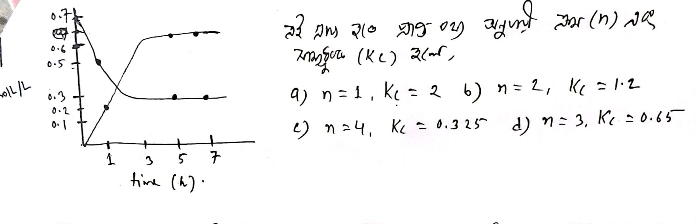
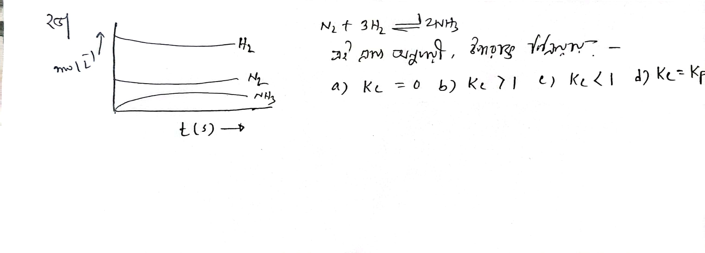

Special Batch Exam 1
কোনটি সঠিক?
i ) প্রভাবক (catalyst) বিক্রিয়ার বিক্রয়কের সাথে বিক্রিয়া করতে পারে (catalyst can react with the reactant itself)
ii) প্রভাবক সক্রিয়ন শক্তি পরিবর্তন করতে পারে (catalyst can change the activation energy)
iii) 2L পাত্রে সাম্যবস্থায় PCl5 এর মোলসংখ্যা 0.2 হলে Kc = 1.6 (at 2L container 0.2 mole PCl5 is present at equilibrium, Kc=1.6)
Your Answer:
A2 + B2 = 2AB এই গ্যাসীয় বিক্রিয়ায় প্রমান মুক্ত শক্তি deltaG0 >0 হলে সাম্যধ্রুবক K এর মান কত?
Your Answer:
If,
i. M=N (at eqm), Kc=1
ii. N=Q (at eqm) , Kc= 4
iii. Q=R (at eqm),Kc=2 then What will be the Kc for the reaction 2R=2M ?
Your Answer:
কোন বিক্রিয়ায় kp > kc? (In which reaction Kp>Kc?)
Your Answer:
AB3(g) ⇌ 1/2 A2(g) +3/2B2(g) -- heat , এই ক্ষেত্রে
i) 1/T বৃদ্ধি পেলে Kp এর মান হ্রাস পায় (Kp decrease if 1/T increase)
ii) চাপ বৃদ্ধি পেলে AB3 এর উতপাদন বৃদ্ধি পায় (AB3 production increased if pressure increased)
iii) তাপমাত্রা বৃদ্ধি পেলে সাম্যর অবস্থান ডান দিকে সরে যায় (eqm is right shifted if T increases)
Your Answer:
NH2COONH4(S) <..................> 2NH3 + CO2(g) , Kp =9 হলে NH3 ও CO2 এর আংশিক চাপ (partial pressure) যথাক্রমে
Your Answer:
Question
Your Answer:
Question
Your Answer:
2Fe(s) + 3H2O(g) ⇌Fe2O3(s) + 3H2(g), Kc =27 হলে H2 ও H2O এর মোলার ঘনমাত্রার অনুপাত?( If Kc=27 in the given reaction, what is the ratio of molar conc of H2 , H2O ?)
Your Answer:
2SO2(g) + O2(g) ⇌ 2SO3(g) , Kc =4, 250 L তাপমাত্রায় 4L পাত্রে SO2 ও SO3 এর ঘনমাত্রা সমান হলে সাম্যবস্থায় (at eqm) O2 এর মোলসংখ্যা?
Your Answer:
CH3COOH +H2O ⇌CH3COO-, K1 = 1.8 x 10-15
2H2O ⇌H3O++OH- K2 =10-14 হলে,
CH3COO- +H2O ⇌ CH3COOH + OH- , এই বিক্রিয়ার জন্য K3 =?
Your Answer:
Ca(HCO3)2 (s) ⇌CaCO3(s) + H2O(g) + CO2(g), সাম্যমিশ্রনে মোট চাপ 0,64 atm হলে
Kp = ? (If the total pressure is 0.64 atm at equilibrium, find Kp)
Your Answer:
২য় ক্রম বিক্রিয়ার অর্ধায়ু এর সমীকরণ কোনটি? (a প্রারম্ভিক ঘনমাত্রা এবং k হার ধ্রুবক) [What is the equation of half life of 2nd order reaction where a is the initial concentration and k is the rate constant]
Your Answer:
N2 + O2(g) ⇌2NO(g), K1 = X, 2NO(g) + O2(g) ⇌ 2NO2(g) K2 = y হলে
NO2(g) ⇌1/2 N2(g) + O2 (g ), এই বিক্রিয়ার সাম্যধ্রুবক (eqm const) ?
Your Answer:
কোন বিক্রিয়াটি প্রায় সম্পূর্ন শেষ? (Which reaction is considered to be completed ?)
Your Answer:
A+B = C , এই উভমুখী বিক্রিয়ায় kp>1 হলে,
i. চাপ বাড়ালে সাম্যবস্থা ডান দিকে যাবে (equilibrium will shifted to right if P increases)
ii. তাপমাত্রা বাড়ালে সাম্যবস্থা বাম দিকে যাবে (equilibrium will shifted to left if T increases)
iii. সামান্য পরিমাণ নিষ্ক্রিয় গ্যাস যোগ করলে বিক্রিয়া বাম দিকে যাবে (equilibrium will shifted to left if inert gas is added)
Your Answer:
A ----->B এই বিক্রিয়ায় A এর ঘনমাত্রা অর্ধেক করলে বিক্রিয়ার হার প্রারম্বিক হার এর 1/8 গুন হয়। ক্রম কত? (order of reaction=?) (rate becomes 1/8 of initial if concentration of A is half, find the order)
Your Answer:
2A(g) + B (g) = 4C (g) + D (g) . এই উভমূখী বিক্রিয়ার ক্ষেত্রে 50 mL পাত্রে উভয় বিক্রিয়ক 3 mole করে নেওয়া হলো। 50 o C A এর বিয়োযন মাত্রা = 20% হলে - (in 50 mL container both the reactant taken 3 mols each and degree of dissociation of A is 20% at 50oc)
i. সাম্যবস্থায় D এর ঘনমাত্রা 0.6 mole/L (at eqm, concentration of D is 0.6 mole/L)
ii. 2.4 mole A বিক্রিয়া পাত্রে অবশিষ্ট থাকে। (unreacted amount of A is 2.4 mole at eqm)
iii. kp/Kc = (RT)2
Your Answer:
2A(g) + B (g) = 4C (g) + D (g) . এই উভমূখী বিক্রিয়ার ক্ষেত্রে 50 mL পাত্রে উভয় বিক্রিয়ক 3 mole করে নেওয়া হলো। 50 o C A এর বিয়োযন মাত্রা = 20% হলে - বিক্রিয়াটি,
Your Answer:
i)Ea/RT হ্রাস পেলে বিক্রিয়ার হার বৃদ্ধি পাবে ii) বিক্রিয়া পাত্রের আয়তন হ্রাস (decrease) পেলে বিক্রিয়ার হার বৃদ্ধি পাবে iii) হার ধ্রুবক (rate constant) তাপমাত্রার সাথে পরিবর্তনশীল ,কোনটি সঠীক?
Your Answer:
কোন বিক্রিয়াটিতে Kp ,Kc এর কোন একক নেই?
Your Answer:
2A(g) + B(g) <..................> 3L(g) + M(g) , বিক্রিয়ার শুরুতে A ও B প্রত্যেকের 2mole কার নেওয়া হলো। সাম্যবস্থায় কোনটি সঠিক?
Your Answer:
একটি দ্বিতীয় ক্রম বিক্রিয়ার অর্ধায়ু 400sec (half time) কত সময় পর এক অস্টমাংশ পদার্থ (1/8 )অবশিষ্ট থাকবে?
Your Answer:
2AB2(g)------->2AB(g)+B2(g). AB2 এর বিয়োজন মাত্রা x হলে এবং x<<1 হলে x এর সঠিক মান কত?(If the degree of dissociation is x in above reaction and x<<1 then value of x?)
Your Answer:
2Fe(s)+4H2O(g)----->4H2(g)+Fe3O4(s),delH=35kj/mol.সাম্যাবস্থায় চাপ বড়ালে কি ঘটবে?(At equilibrium if pressure increased what will happen?)
Your Answer:
2mol PCl5 কে 5L ফ্লাক্সে 80°c তাপমাত্রায় উত্তপ্ত করা হলো। যদি PCl5 এর 70% বিয়োজন হয় তবে সাম্যাবস্থায় মোট চাপ কত?(if degree of dissociation is 70% then at equilibrium total pressure?)
Your Answer:
N2O4(g)⇌2NO2(g),এ বিক্রিয়ার সাম্যাবস্থায় তাপমাত্রা স্থির রেখে পাত্রের আয়তন অর্ধেক করলে Kp ও x(বিয়োজন ধ্রুবক) এর ক্ষেত্রে নিচের কোনটি সঠিক?(At this reaction if volume is halved when temperature unchanged then which one will be correct for Kp and x(dissociation const.)?)
Your Answer:
1L আয়তনের পাত্রে 1mol N2 ও 3 mol H2 গ্যাস নিম্নে প্রয়োজনীয় শর্তে উতপাদন করা হলো-
N2(g)+3H2(g)------->2NH3(g)
সাম্যমিশ্রনে উতপন্ন NH3 কে প্রশমিত করতে 250mL 2M HCl প্রয়োজন হলে সাম্যধ্রুবক Kc এর মান কত?
(To neutralize the NH3 produced at equilibrium if 250mL 2M HCl is needed then what is the value of Kc?)
Your Answer: